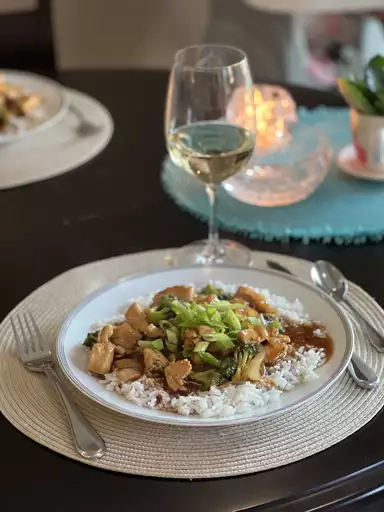

Chicken and Broccoli Stir Fry

Description
This recipe for chicken and broccoli is sure to make anyone who enjoys asain cuisine hungry!
This dish will only take you about 40 minutes, serving about 3
people. With just 10 ingredients and it being a stirfry anyone could make this quick dinner. Serve with rice and you've got a whole meal. Enjoy!
Ingredients
- Soy sauce
- Brown sugar
- Ground ginger
- Red pepper flakes
- Water
- Cornstarch
- Vegetable oil
- Boneless chicken breast or chunks
- An onion
- Broccoli florets
Steps
- Gather all ingredients
- Stir soy sauce, brown sugar, ginger, and red pepper in
a bowl until the sugar disolves. Mix water and
cornstarch together with a whisk until the starch is
dissolved completely.
- Heat oil in a large skillet over high heat. Fry chicken
and onion for about 7 minutes.
Stir in broccoli with the chicken and onions for about 5 minutes
- Push chicken and veggies to the side of the pan to pour
soy sauce mixture in the vacant spot. Stir the cornstarch
mixture into the soy sauce until the color is consistent.
- Move chicken and veggies back into the center of
the pan and saute until the sauce thickens and coats
chicken veggies. About another 5 minutes.